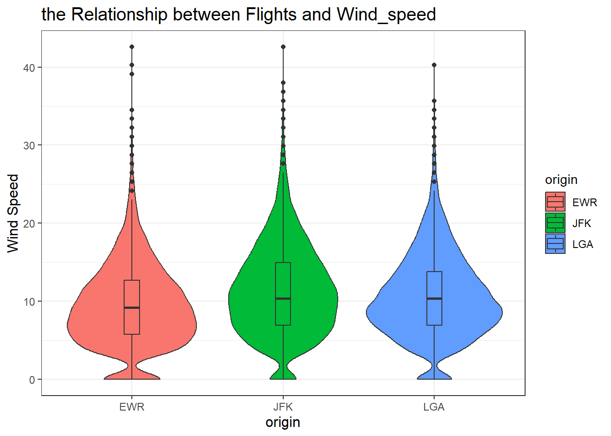
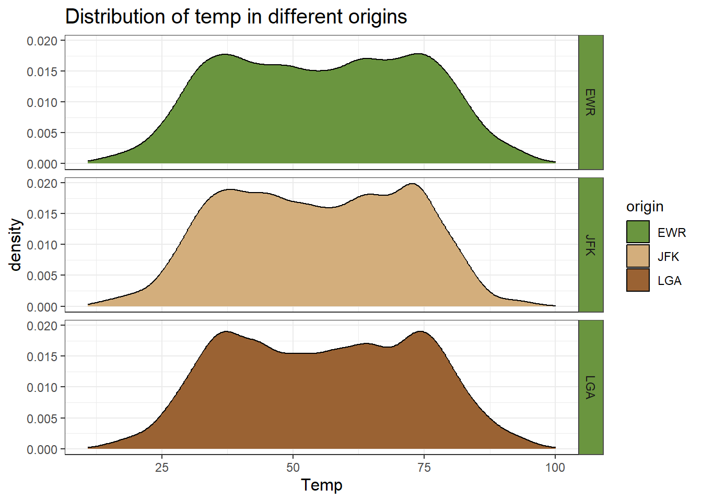
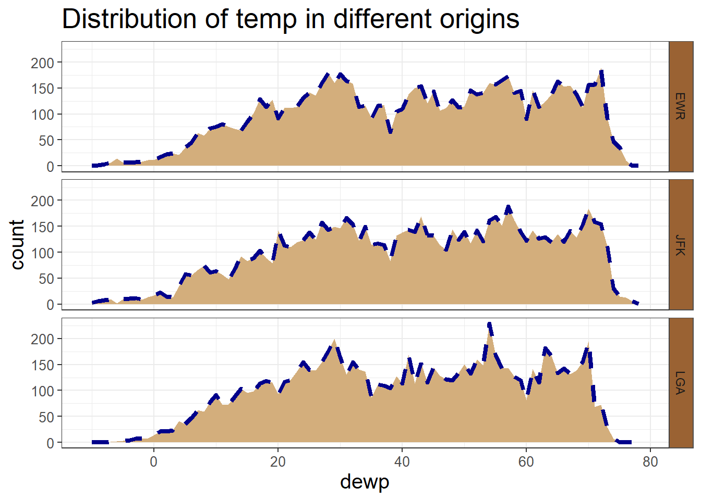
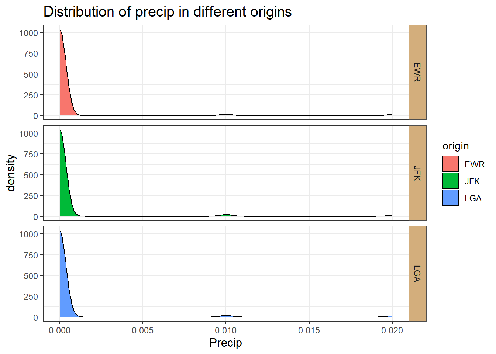
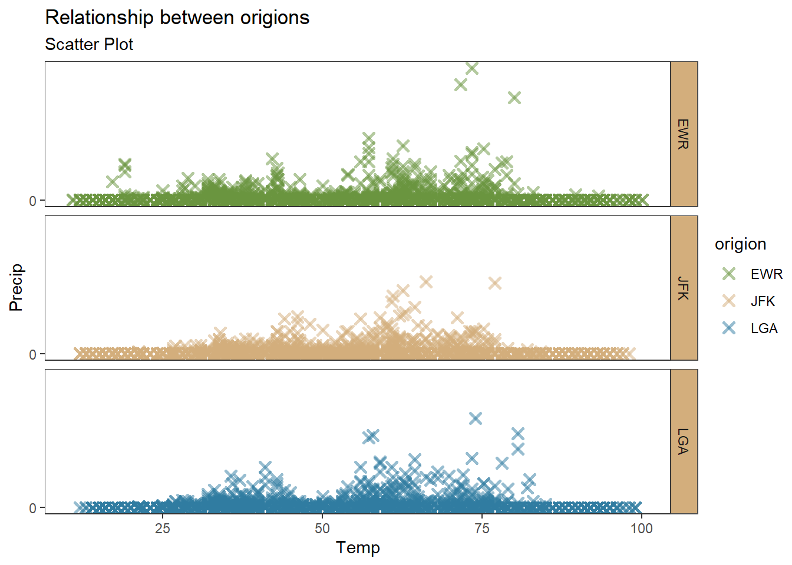
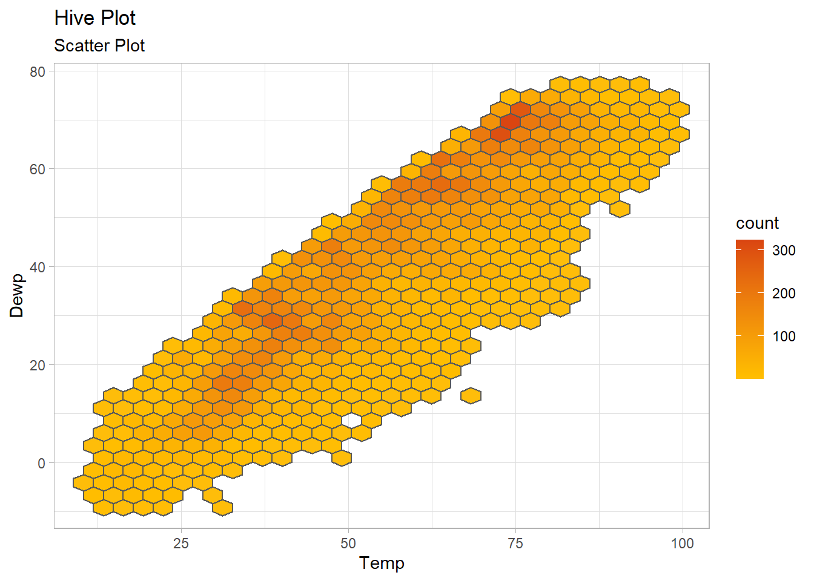
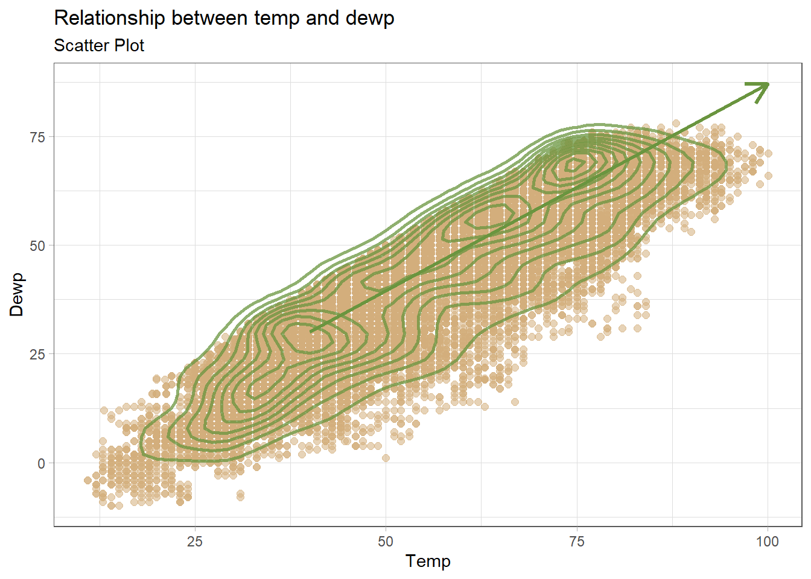

> library(nycflights13)
> library(tidyverse)weather dataset exploration
数据概况
> flights
# A tibble: 336,776 × 19
year month day dep_time sched_dep_time dep_delay arr_time sched_arr_time
<int> <int> <int> <int> <int> <dbl> <int> <int>
1 2013 1 1 517 515 2 830 819
2 2013 1 1 533 529 4 850 830
3 2013 1 1 542 540 2 923 850
4 2013 1 1 544 545 -1 1004 1022
5 2013 1 1 554 600 -6 812 837
6 2013 1 1 554 558 -4 740 728
7 2013 1 1 555 600 -5 913 854
8 2013 1 1 557 600 -3 709 723
9 2013 1 1 557 600 -3 838 846
10 2013 1 1 558 600 -2 753 745
# ℹ 336,766 more rows
# ℹ 11 more variables: arr_delay <dbl>, carrier <chr>, flight <int>,
# tailnum <chr>, origin <chr>, dest <chr>, air_time <dbl>, distance <dbl>,
# hour <dbl>, minute <dbl>, time_hour <dttm>
> weather
# A tibble: 26,115 × 15
origin year month day hour temp dewp humid wind_dir wind_speed
<chr> <int> <int> <int> <int> <dbl> <dbl> <dbl> <dbl> <dbl>
1 EWR 2013 1 1 1 39.0 26.1 59.4 270 10.4
2 EWR 2013 1 1 2 39.0 27.0 61.6 250 8.06
3 EWR 2013 1 1 3 39.0 28.0 64.4 240 11.5
4 EWR 2013 1 1 4 39.9 28.0 62.2 250 12.7
5 EWR 2013 1 1 5 39.0 28.0 64.4 260 12.7
6 EWR 2013 1 1 6 37.9 28.0 67.2 240 11.5
7 EWR 2013 1 1 7 39.0 28.0 64.4 240 15.0
8 EWR 2013 1 1 8 39.9 28.0 62.2 250 10.4
9 EWR 2013 1 1 9 39.9 28.0 62.2 260 15.0
10 EWR 2013 1 1 10 41 28.0 59.6 260 13.8
# ℹ 26,105 more rows
# ℹ 5 more variables: wind_gust <dbl>, precip <dbl>, pressure <dbl>,
# visib <dbl>, time_hour <dttm>origin：天气观测站，命名为origin以便于与flights数据集进行合并。
year, month, day, hour：天气观测的时间，分别表示年、月、日和小时。
temp, dewp：温度和露点温度，以华氏度为单位。
humid：相对湿度。
wind_dir, wind_speed!!, wind_gust：风向（以度为单位）、风速和阵风速度，以英里每小时为单位。
precip：降水量，以英寸为单位。
pressure：海平面气压，以毫巴为单位。
visib：能见度，以英里为单位。
time_hour：天气观测的日期和时间。
风速与航班的关系
> weather |>
+ filter(wind_speed<200) |>
+ ggplot(aes(x=origin, y= wind_speed,fill=origin)) +
+ geom_violin()+
+ geom_boxplot(width=0.1)+
+ labs(x="origin",
+ y="Wind Speed",
+ title="the Relationship between Flights and Wind_speed")+
+ theme_bw()+
+ theme(plot.title = element_text(size=15),
+ axis.text.x= element_text(size=9),
+ axis.text.y= element_text(size=9),
+ axis.title=element_text(size=12))
出行航班的风速大多是在200以内，因此首先对风速范围做一个筛选，否则会使得数据被压缩在一个小范围内。删选风速范围之后，对不同地区的风速做一个直观的箱型图和小提琴图的一个结合，我们发现，EWR这个地区的风速较其他两个地区的低，LGA地区的风速较JFK地区更稳定集中些
风速与月份之间在地区上的关系
> weather |>
+ ggplot(aes(x=as.factor(month),y=wind_speed))+
+ geom_bar(stat="identity",fill = "steelblue",alpha = 0.7)+
+ facet_wrap(~origin)+
+ labs(x="month",
+ y="wind_speed",
+ title="The ralationship between wind_speed and month")+
+ theme_bw()+
+ theme(plot.title = element_text(size=15),
+ axis.text.x= element_text(size=7),
+ axis.text.y= element_text(size=10),
+ axis.title=element_text(size=12),
+ strip.background = element_rect(colour = "grey30", fill = "steelblue"))
从图中的趋势可以看出，风速与月份之间存在联系，风速具有一定的季节性，夏季较低，春冬季风速较高。确实EWR地区的风速相较于其他两个地区的风速更低。
湿度(temp)与航班的关系
> colorsEarth <- c("#DA4511", "#FFBD00", "#6A953F", "#9A6233", "#D3AE7C", "#307CA1")
> weather |>
+ ggplot(aes(x=temp)) +
+ geom_density(aes(fill=origin))+
+ facet_grid(origin ~ .)+
+ labs(x="Temp",
+ y="density",
+ title="Distribution of temp in different origins")+
+ theme_bw()+
+ theme(plot.title = element_text(size=15),
+ axis.text.x= element_text(size=9),
+ axis.text.y= element_text(size=9),
+ axis.title=element_text(size=12),
+ strip.background = element_rect(colour = "grey30", fill = "#6A953F"))+
+ scale_fill_manual(values = colorsEarth[c(3,5,4)])
几个地区的湿度变化趋势相似。
露点温度（dewp）与航班的关系
> weather |>
+ ggplot(aes(x=dewp))+
+ geom_area(stat="bin",color="darkblue", fill=colorsEarth[5],binwidth=1,linetype="dashed",size=1.5)+
+ facet_grid(origin ~ .)+
+ geom_vline(aes(xintercept=mean(n)),
+ color="blue", linetype="dashed", size=2)+
+ labs(x="dewp",
+ y="count",
+ title="Distribution of temp in different origins")+
+ theme_bw()+
+ theme(plot.title = element_text(size=20)
+ ,axis.text.x= element_text(size=10),
+ axis.text.y= element_text(size=10),
+ axis.title=element_text(size=15),
+ strip.background = element_rect(colour = "grey30", fill = "#9A6233"))
三个地区露点温度的分布相差不大，多集中在20-70之间，在这几个时间段内航班飞行的数量较多。
降水量（precip）与航班的关系
> weather |>
+ filter(precip<0.025) |>
+ ggplot(aes(x=precip)) +
+ geom_density(aes(fill=origin))+
+ facet_grid(origin ~ .)+
+ labs(x="Precip",
+ y="density",
+ title="Distribution of precip in different origins")+
+ theme_bw()+
+ theme(plot.title = element_text(size=15),
+ axis.text.x= element_text(size=9),
+ axis.text.y= element_text(size=9),
+ axis.title=element_text(size=12),
+ strip.background = element_rect(colour = "grey30", fill = "#D3AE7C"))
三个地区的情况相似，航班飞行多集可接受的降水量在0~0.002之间，偶有降水量高的时间飞行的航班。
湿度与降水量之间的关系
> weather |>
+ ggplot(aes(x = temp, y = precip)) +
+ geom_point(aes(color = as.factor(origin)), size = 2, stroke = 1.5, alpha = 0.5,shape = 4) +
+ theme_test() +
+ facet_grid(origin ~ .)+
+ labs(x = "Temp", y = "Precip", title = "Relationship between origions", color = "origion",
+ subtitle = "Scatter Plot") +
+ scale_color_manual(values = colorsEarth[c(3,5,6)]) +
+ scale_x_continuous(breaks = seq(0, 250, 25)) +
+ scale_y_continuous(breaks = seq(0, 200, 25)) +
+ theme(strip.background = element_rect(colour = "grey30", fill = "#D3AE7C"))
从图中可以看出，湿度与降水量没有明显的线性关系，在湿度为25-80之间时可能更容易降水。二者的关系在三个地区上的情况没有什么不同。
湿度与露点温度
> weather |>
+ ggplot(aes(x = temp, y = dewp)) +
+ geom_hex(bins = 30, color = "grey35") +
+ theme_light() +
+ labs(x = "Temp", y = "Dewp", title = "Hive Plot",
+ subtitle = "Scatter Plot") +
+ scale_fill_gradient2(low = colorsEarth[5], mid = colorsEarth[2], high = colorsEarth[1],
+ midpoint = 8)
这张蜂巢图展现了，湿度(temp)与露点温度(dewp)有很强的线性关系。随着湿度的升高，露点温度也逐渐升高。
> weather |>
+ ggplot(aes(x = temp, y = dewp)) +
+ geom_point(alpha = 0.55, size = 2, color = colorsEarth[5]) +
+ geom_density2d(lineend = "round", linejoin = "round", n = 50, size = 1, color = colorsEarth[3], alpha = 0.75) +
+
+ theme_light() +
+ labs(x = "Temp", y = "Dewp", title = "Relationship between temp and dewp",
+ subtitle = "Scatter Plot") +
+ theme(panel.border = element_rect(color = "grey35")) +
+ geom_segment(aes(x = 40, y = 30, xend = 100, yend = 87), color = colorsEarth[3], size = 1.2,
+ arrow = arrow(length = unit(0.5, "cm")))
这张喷发图也揭示了上述趋势。
Q2 temp与dewp线性关系的验证
> lm(data = weather,dewp~temp) |>
+ summary()
Call:
lm(formula = dewp ~ temp, data = weather)
Residuals:
Min 1Q Median 3Q Max
-38.805 -5.788 0.905 7.265 14.293
Coefficients:
Estimate Std. Error t value Pr(>|t|)
(Intercept) -12.423754 0.175153 -70.93 <2e-16 ***
temp 0.974726 0.003017 323.06 <2e-16 ***
---
Signif. codes: 0 '***' 0.001 '**' 0.01 '*' 0.05 '.' 0.1 ' ' 1
Residual standard error: 8.673 on 26112 degrees of freedom
(1 observation deleted due to missingness)
Multiple R-squared: 0.7999, Adjusted R-squared: 0.7999
F-statistic: 1.044e+05 on 1 and 26112 DF, p-value: < 2.2e-16使用线性回归进行验证，发现，temp可解释dewp80%的方差，且方程显著，证实了上述发现。目前，我们并不具备相关的物理知识，但统计学角度证实了二者的强相关关系。
知识补充
二者确实具有正相关的关系。当空气中水汽含量（绝对湿度）增加时，在相同的气压和气温条件下，水汽压也会随之升高。根据露点温度的定义，要使水汽达到饱和而凝结的温度（露点温度）也会升高。例如，在一个封闭的空间里，如果不断向其中增加水蒸气，空气就会越来越接近饱和状态，露点温度也会不断上升。